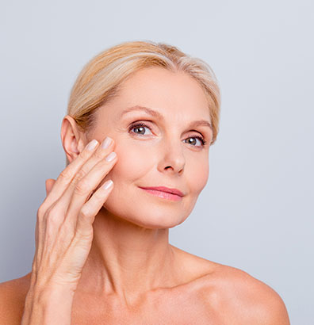
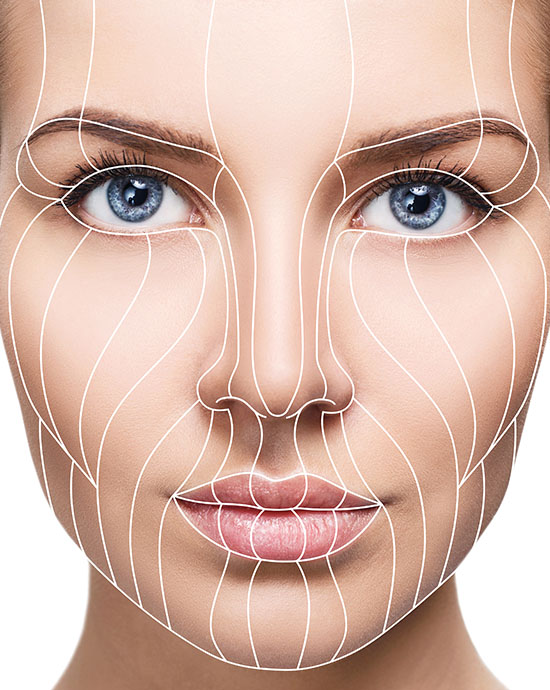

It is a cosmetic process to make the face look more youthful. Thanks to this processSkin flabs or folds on the cheeks and jaw are eliminatedAnd other changes in the shape of the face that occur with age. duringFacelift, the skin of the cheeks is tightened again, and the tissues are changedSurgically subcutaneously to make the facial structure look more youthful. CompleteRemove excess skin after determining the final face shape. Often doneNeck lift as part of a face lift to reduce fat and saggingSkin on the neck. Facelift will not reduce fine wrinkles orSkin wrinkles or sun damage. CanOther cosmetic procedures improve appearance or qualityThe skin itself.

Facelift
 Over time and for many of the natural causes associated with advancing inAge changes the appearance of the face. Skin becomes less elastic, fat decreasesIn some areas of the face and increase in others. The changes include andIt can be eliminated by the face lifting process, including: Sagging cheeks.Increased skin at the bottom of the jaw. Increase the thickness of the skin folds inThe area of the side of the nose and mouth. Sagging skin and excess fat in the neck.Facelift is not a solution to surface wrinkles, sun damage, orWrinkles around the nose, upper lip, or irregular skin tone.Face-lift can cause complications. Can avoid some withAppropriate care, medication or surgical intervention. ComplicationsLong-term or permanent, although rare, can cause changesGreat in appearance
Possible risks: hematopoiesis: hematuria under the skinWhich is due to swelling and pressure the most common complication of a face-lift.Blood clusters usually occur within 24 hours of surgery, and they mustImmediately surgical intervention to prevent damage to the skin and other tissues.Scarring: The scarring that occurs after a facelift is permanentBut it is usually hidden by the natural capillaries of the face and ear. In casesRarely, cracks can lead to red scars. Can useInjecting corticosteroid medicine or other treatments to improve the appearance of scars.Hair loss: You may experience temporary or permanent hair loss nearCrack sites. Permanent hair loss can be treated with a procedureHair transplant process. Like any other type of operation, the tighteningThe face presents a risk of bleeding, infection and a negative reaction to anesthesia. CanSome habits also increase your risk of complications. Such as: MsilatBlood or supplements. Some medical conditions. Smoking.Weight changes.
In general, face lifting raises the skin and tightens tissues and musclesthe basic. Facial and neck fat can be sculpted, removed or recreatedDistribute it. The skin is then re-tightened over the newly defined facial features,Excess skin is removed, the incision is stitched and closed. The process is doneUsually under local anesthesia, and in other cases, anesthesia may be recommendedYear. Cracks depend on the technologies to be applied and optionsPatient. Options include: the traditional facelift incision starts from the templeIt continues down and around the front of your ears and ends behind your ears below the scalpYour head. An incision may be made under your chin to improve the appearance of your neck. Limited fissureIt is a shorter incision that starts from your hair directly above your ear, and wraps around the partThe front of your ear, but it does not extend down the scalp. Tightening incision beginsThe neck is in front of the earlobe and continues around your ear to the bottom of your scalp.A small incision is also made under your chin. Facelifts generally take placeTwo to four hours, but it may take longer if donePerforming other cosmetic operations at the same time.
Personal care at home helps during the first three weeksTo recover and reduce the risk of complications: Follow the care instructionsDo not scratch the scales that occur on your wound. Follow the instructionsWhen to start using shampoo, soaps and typesYou can use it. Wearing blouses (shirts) for easy take off and wearingWithout touching the face. Avoid overpressure or touching and cracking cracks. AvoidUse makeup. Avoid being active or exercising. AvoidDirect exposure to the sun for three weeks and use a sunscreenSun SPF 30 or higher. Avoid dyeing or bleaching hairCurl it for at least six weeks.
ابقى على تواصل
سوف نكون في انتظاركم في المطار حين وصولكم حتى نأخذكم